〜〜過去の雑記〜〜
17）05/04/04〜05/07/06分
16）04/12/17〜05/03/08分
15）03/08/25〜04/12/12分
14）03/03/13〜03/07/20分
13）03/01/20〜03/03/12分
12）02/09/30〜03/01/02分
11）02/07/08〜02/09/29分
10）02/01/07〜02/07/08分
９）01/08/30〜01/10/30分
８）01/06/20〜01/08/25分
７）01/05/09〜01/06/12分
６）01/03/02〜01/05/03分
５）01/02/06〜01/03/01分
４）00/12/30〜01/02/05分
３）00/12/22〜00/12/29分
２）00/12/14〜00/12/21分
１）00/11/24〜00/12/13分
（雑記の内容については、あくまでもフィクションであると捉えてください。実際の団体・個人等とは無関係です）

05/12/05
記憶力
私は記憶力が低いと自認している。
今日ＰＣを少し整理していたら、何か自分が作ったらしいプログラムが出てきた。
東風関係のプログラムらしく、「MJ-COM」と題されている。
何か色々なボタンがついていて、どうやら東風の画面情報を読み取り、各牌の「場に出ている枚数」だの「上家への放銃率」だのを計算させようという算段のようだ。
「むむむ。こんな面倒そうなプログラム作った覚えはないぞ。昔の自分……若いな。……どうせ画面デザインしたところで放り出しているんだろ」
とりあえず起動してみて東風に入る。
すると……
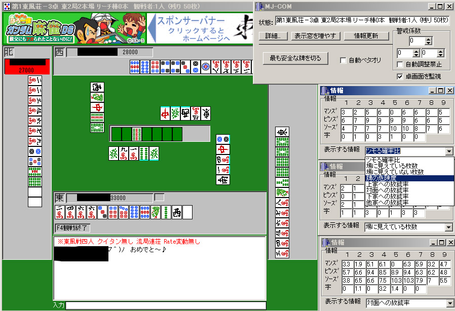
生きてる！ 動いてる！！
ためしにトイメンがテンパイしていると仮定した場合の、各牌のトイメンへの放銃率を表示してみたところ、おお！
ちゃんと現物の放銃率が0になってる！ 1マンがたくさん出ている分、同じスジでも2マンが8マンよりもかなり安全に評価されてる！
画面入力から放銃率計算まで一通り実装しちゃってるじゃないの！！
このコーディングの特徴……間違いなく自分が書いたものである。
馬鹿にしてすまなかった、若き日の自分よ。
全然覚えてねぇ！ 全然覚えてねぇよこのプログラム！！(笑)
（そういえばほんの半年前に自分が書いた文章を、まるっきり忘れていて、後になって新鮮に読むことができたりすることもある……病気か？ 笑）
ちょうど「相手の待ちを読むプログラム（現MJ-1）」の精度をより高めるための理屈を作ろうとしていたところで、計算ではやっぱり組み合わせ爆発しちゃうので、シミュレーションしかないなぁとMJ-1の改良をもくろんでいた。
で、まさにこういうソフトを１から作ろうとしていたところだった。
あぶねぇ！
危うく２つ同じやつ作るとこやったよ！
２回同じギャグ言っちゃうくらいベタやよ！！
男Ａ「それさっき言うとったやん」
男Ｂ「またかよ。」
女Ｃ「もうういいよ凸さん……。」
男Ａ「２回やってええなら、何でもみんな２回やるがな。」
女Ｃ「そうよ。ボーナス２回もらうとか。」
男Ｂ「それをみんな我慢してやっていっとんねん。なんで凸だけ２回すんねん。」
女Ｃ「だらしないわね。」
男Ａ「ダメだな凸は。人として。」
男Ｂ「人間として。」
女Ｃ「人として。」
男Ａ「人間として。」
男Ｂ「人として。」
女Ｃ「人間として。」
凸「ちょっ……お前らも２回言うとるがな！！！ しかも無駄に交互に！！ あと、なんで近づいてくんねん！」
男Ａ「よく見ろ。全員、同じことは２回言ってないぞ」
凸「うぜぇ！ 小細工うぜえ！」
さて、かつての自分が書いたプログラムを解読するところからはじめますか……。
05/12/04 （05/12/03を先に読むことを推奨します）
黒凸とワニ２
先日の日記にも登場したワニ。
大学入学当初からつるんでいた、同じ学部だった友達である。
彼は、ものごとの真理を衝いた黒い発言をしてくる。
ワニと待ち合わせ、ワニが遅れてきたときの会話。
ワニ「悪い悪い、待たせたね」
凸「なんで遅れたん？」
ワニ「俺が待たされるよりも、君に待たせる方が俺が得だから。俺が待たされると俺は損であるにもかかわらず、君ごときを待たせても俺は損しない、というよりむしろ相対的には得とさえ言えるから」
凸「( ≧∇≦)ﾌﾞﾊﾊﾊ! 明晰に黒！！」
ワニ「誰もが理解できるが、誰もが否定したがり、そして誰もが口にしなかった真理……」
凸「正論すぎるな……」
大学の試験前、かなり焦って一緒に勉強していたときの会話（ワニは留年１歩手前）。
凸「うううむ、むっずいなぁこれ。こんな勉強しとんのに……」
ワニ「はぁ、なんでここ、こうなるんだよ、わかんねー」
凸「あああわからん」
ワニ「これも飛ばして次やるか。はぁ」
（そんな悲しげな会話のあとしばらくして）
ワニ「紙になりてぇ……」
凸「紙？ なんで？」
ワニ「楽だから」
凸「ついに無機物になりたくなるほど追い詰められたか( ≧∇≦)ﾌﾞﾊﾊﾊ!」
ワニ「紙は勉強しなくていいし」
凸「うははは、紙になりたい男初めて見たよ！ しかも理由は『勉強しなくていい』！」
ワニ「でもこれ絶対さ、いじめられっこの中学生とかも実感してるって」
凸「『紙になりてぇなぁ……楽だから』って？( ≧∇≦)ﾌﾞﾊﾊﾊ!」
ワニ「……正論だろ？(笑)」
凸「……確かに正論だな……だって俺も今、紙になりたいもん」
ワニ「ていうか、別に試験とかなくてもさ、生きるのめんどくせーから死にたい」
凸「それもまた正論だな……」
麻雀中。
ワニ「はいロン、４マン単騎追っかけリーのみ。得ぅぅ！」
凸「うわうっざ……！ こっち親マン３面待ちやよ！ この早慶明治中央落ちが！(笑)」
ワニ「ま、芝○工業大しか滑り止め受からなかったことは認めよう。しかし今となっては君と同じ立場だがね。可能な限り運のみで受かった方が得。」
凸「ぐっ……正論。人生は麻雀のようだな」
ワニ「そう、今のこの手をみよ。凸は良い待ちだった。しかし凸は俺にロンされた。それと同様に、人生においても君はロンされていたのさ。これまでも、そしてこれからもな」
凸「これからもかよ！ ひどすぎる( ≧∇≦)ﾌﾞﾊﾊﾊ!」
ふとした会話。
凸「ギュスターヴ・フローベールの本がおもろいらしい。読んでみよっかな」
ワニ「ふむ」
凸「なんだっけ……ヴォバリー夫人だっけ。それがいいらしい」
ワニ「ヴォバリーじゃなくて、ボヴァリー夫人な。低！ 英語を読むときはとりあえずｒもｌもごっちゃにして全部巻き舌にし、それらしくしようとする大衆のあがきに似ているな」
凸「くっ！ そ、そこまで言うか……！」
ワニ「ｂ（ブ）であるにもかかわらず下唇を噛んでｖ（ヴ）と発音することをもって、『無駄噛み』と定義するとすると、君は無駄噛みをしたわけだ。そしてその逆を『噛み忘れ』と呼ぶならば、君は噛み忘れをもしたことになる」
凸「ダサさを明文化するな(笑)」
ワニ「しかし……」
凸・ワニ「確かに正論だな……」
合コンに一緒に行ったあと。
ワニ「なにあのトイメンのブス」
凸「うっわ……相変わらず正論すぎるな、お前」
ワニ「髪の毛あげすぎだし。どんだけ勝負に出てきてんの」
凸「鋭いご指摘(笑)」
ワニ「死ぬことを提案してあげようかな」
凸「お前……あったけぇなぁ（ジーン）」
またもやワニの遅刻。
凸「遅！ この私を20分も待たせるとは！ 強い犬２匹けしかけるぞ！」
ワニ「なんで犬なの(笑)」
凸「もうほんま……すげぇ強ェの。ほんと強い」
ワニ「犬の強さはいいから(笑) しかもなんか漠然としてるし」
凸「あと10分遅ければ３匹に増えてた」
ワニ「ｎ分遅れるとｎ/10匹という形式だな」
凸「うっ！ 観察により、容易に『犬の式』を見破られたか……」
ワニ「この世の『犬の式』の中でももっとも粗野な式だな。愚昧。」
凸「『犬の式』なんて、俺以外に誰が作ってるねん(笑)」
ワニ「俺の『犬の式』はすげーよ？」
凸「なにがやねん」
ワニ「871π匹」
凸「多い多い！ なんか犬たくさん出たよ！ 円周率なんで関係してくるねん！」
ワニ「式にΣとかπとか入ってるからね」
凸「小数出てもうとるがな！ 小数部分はなんやねん(笑)」
ワニ「マルチーズ」
凸「無理につじつまあわすな！ 小さくても１匹は１匹やろうが！ なんでマルチーズ限定やねん( ≧∇≦)ﾌﾞﾊﾊﾊ!」
05/12/03
黒凸とワニ１
大学時代の親友が引っ越すという。
ワニ「今度引越しするのよ」
凸「ほほう」
ワニ「手伝ってくれない？」
凸「嫌ですヽ(´▽`*)/」
ワニ「君も知ってのとおり、おれには秘密が多いからな。会社の同僚とかには頼めない」
凸「ふむ」
ワニ「しかも友達がいないからさ。君にしか頼めないんだが、どう……」
凸「めんどくさい」
ワニ「だろうな……」
凸「うむ、またの機会を心よりお待ちしています←」
ワニ「ちなみに、引越しで、業者に頼むとどれくらいするんだろ」
むっ！
凸「……10万くらいするね（5万くらいだろうが）」
ワニ「まじかよ、じゃあ業者呼ばずにトラック借りて自分でやるしかないな」
凸「一人では大変ですよね」
ワニ「うむ」
凸「手伝おうか？」
ワニ「まじで？」
凸「いくら出す？」
ワニ「じょじょえんで焼肉おごるよ」
凸「いくら出す？」
ワニ「じょじょえん＋5000円」
凸「そろそろ本音でいこうか」
ワニ「じょじょえん 游玄亭 ＋10000円」
凸「よし！ 請け負った！」
ワニ「今度の土曜な」
ﾌﾟﾙﾙﾙ……ﾌﾟﾙﾙﾙ……
男「はい、○○会社、Ａです。」
凸「とつげきです、おひさしぶりです」
Ａ「おおお、とつさん、おひさしぶりです！」
凸「どうも、こんばんは」
（中略）
Ａ「いやぁ、半年前に原稿を依頼してから今まで、完全に放置されてまして、社内での立場もアレでしたよ(´▽`#)」
凸「いやぁその節は……土曜日打ち合わせしません？」
Ａ「おお、よろしければぜひ！！！」
凸「ええ、そうしましょう」
Ａ「どうもです」
凸「で……あくまでもこれは参考情報といいますか、打ち合わせとは無関係の話なのですが」
Ａ「はい」
凸「ちょうど土曜日、大学時代の友達の引越しがあるんですよ。私は5000円で手伝うんですけども、同じ条件で手伝っていただけませんでしょうか？」
Ａ「（うわぁ、こいつうぜぇ）」
凸「まあダメでしたらしょうがないのですが」
Ａ「……ええ、私もやりますよ！」
凸「ありがとうございます」
こうして暗黒凸は、「親友」の引越しを手伝うことにより、5000円をゲットしつつ焼肉をたらふく食ってきたそうじゃ。
凸のおかげで、ワニは引越し費用を4万ほどに抑えられたし（うち２万円は凸に支払った額）、某Ａ編集者は5000円を得て世のため人のために働くことができたそうじゃ。
凸という男、なんとも慈悲深い男じゃ。
めでたし、めでたし。
05/12/02
ラーメン屋の心理
私はラーメンが好きである。
色々なラーメン屋に行くのだが、変な店を発見した。
東小金井の駅前にある『宝華』である。
油そば「宝そば」が大変おいしい。
家からものすごい遠いのだが、つい休日にこれを食うためだけに片道１時間かけて出かけてしまったこともあるほどだ。
本当にオススメの店である。
では何がおかしいのか？
以下、見ていこう。
私はネギが大好きなので、トッピングをしてもらうことにした。
凸「ネギのトッピングありますか？」
店員「ネギ……100円……150円くらいになってしまいますが……あります」
凸「（お前！ ネギトッピング、ほんまはないやろ！ 明らかにない。今考えながらしゃべっとる。しかも最初思いつきで100円と言ったが、『150円くらい取れるかな』などと後から気づき、徐々に高くしていっとる！ 『150円くらい』て何やの。なんで定まってないねん(笑) しかもちょっと良心が痛み、『なってしまう』などと、通常使い得ない言葉なっとる！！ 私は心理学的観点からこう断言する。この店には今この瞬間まで、絶対ネギトッピングがなかった！ 間違いない！ きちゃねぇ！）」
だが、そればかりではない。
ある日この店にいくと、店の前のホワイトボードに書かれていたのが【図１】である。
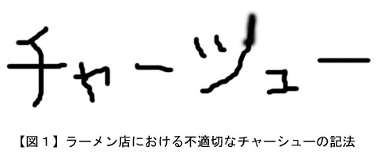
「『ツ』と『シ』の書き分け」に失敗しているもようである。
その上、どう見ても『ツ』にしか見えようもない字をなんとか『シ』にしたく、右側部分を不自然に延長してあがいた形跡がみられ、大変見苦しいことになっている。
無駄な努力である。
【図２】が、模範的な「ツ」と「シ」の書き分けである。
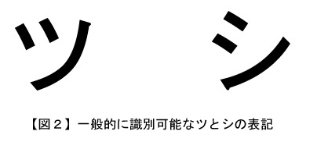
これを見てもわかるように、「ツ」と「シ」は、決して右側の斜線部分の角度や長さによって識別されるのではなく、左側部分の２つの点の角度が大事なのである。
証明しよう！
【図３】は、「ツ」の左の２つの点と「シ」の右側の斜線を組み合わせた字（左）と、その逆の字（右）との比較である。
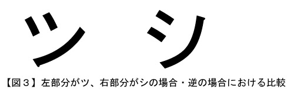
明らかに、左の字の方が「ツ」に見え、右側は「シ」に見える。
すなわち、「ツ」になってしまった字を「シ」に直したい場合、われわれがすべきは右側の斜線をムリに延ばしたりすることではなく、左側の点の角度を変えることに他ならないのだ！！
……ﾊｧ、ﾊｧ。
お前今、「けっこうどっちもツにもシにも見えるじゃん……」とか思ったろ。
俺の努力を！！
あてどない明日に向かって歩ませるぞ。
メラ……メラミくらいで攻撃するぞ！！！
05/11/29
飲み会２
え、次はワス？
あの……こう見えて29ッス。
酒は強いッス。
職業？ 今は……カンダタこぶんッス。公務員ッス。
いつもカンダタのために勇者と戦って……手当てもつくス。
「危険業務手当て」
「カンダタ手当て」
などなど。お手盛りッス。
好きなタイプは……有名人で言えばやっぱり、ベギラマを使わない人、例えば山川えりかとか、そういう人ッスね。
好きなビル？ 八王子ビルヂング、いいッス。
好きなホイミの種類？ とりわけベホイミっす。
今、恋してるかって……？
そ、そんなぁ……！
恥ずかしいッスよ！
……アレ！？ どうして急いで次の人に行くッスか！？
まだ話終わってないッス！
うわ、やめるッス！
なんかちょっとシャレた居酒屋メニューごときに舌鼓（したつづみ）打つのはやめた方がいいッス！
人気ないまずい料理を「凸さんも食べたら？」とかすすめてくるの良くないッスよ！
あと、普通に「うざい」とか言ってパンチとかぶちこんでくるな！
ワスが帰ったあと塩まくの、やめてほしいッス！
しかもそれ味塩！！！
05/11/25
飲み会１
なんで同じ量のお酒を飲んでるのに、膀胱パンパンの時と、全然平気な時があるのだろうか。
「膀胱の調子」によって、１回の飲み会で５回くらいトイレに行くときと、１度も行かずに済む時がある。
あまりにも頻繁にトイレに行くのは、正直恥ずかしい。
女性Ａ「あら、あの人またトイレなのね」
女性Ｂ「トイレをこよなく愛しているか、または膀胱が小さすぎるのだわ」
女性Ａ「嫌ねぇ・・・」
こんなことを言われたら心外である。
こういう場合、しょうがなく電話に出るフリをする。
凸「おっと失礼、電話だ・・・もしもし」
凸「ハイ、ハイ、ええ・・・そうですねぇ。ええ」
（と言いつつ席をたつ。気づかれないようトイレの方向にフラフラと歩き出す）
女性Ａ「あら、あの人お忙しそうね」
女性Ｂ「ええ。またもやトイレかと思いきや、電話なのね。できる人なのね」
ふふ、どうだ。
女性Ａ「じゃが、トイレの可能性も否定できないわ」
女性Ｂ「トイレではないとは言い切れないわね」
うっ！ うすうす気づいてやがる！
と、このように飲み会の席で「膀胱の調子」が悪いと、たいへん困るのである。
先日の飲み会では完勝であった。
膀胱が絶好調であり、１度もトイレに行かずに済んだのである。
間違いなく、私のいない間に以下のような会話がなされていたに違いない。
女性Ａ「キャー！ あの人１回もトイレにいってないわ！」
女性Ｂ「凸さんステキ！！！」
女性Ａ「凸さんって、なんて我慢強い方かしら（ウットリ）」 ← いや我慢しまくってるのかよ！！ かっこわるいよ！
05/11/21
やはり時代は天声人語
太鼓の達人をやったくらいでは血豆などできない、現代の若者はそう安心してはいまいか。
太鼓の達人がしたいと思えば会社帰りにゲーセンに出向き、たった一人で太鼓の達人をプレイし、飽きたらすぐに家に帰る。
それが普通だと思っていまいか。
だが、待って欲しい。
それは恥ずかしい行為、危険な行為であると、誰にも教わらなかったのか。なぜ周囲の人間が救いの手を差し伸べなかったのか。

先日、太鼓の達人を一人でプレイしすぎたために、取り返しがつかない血豆を作ってしまった男性は、公務員だったという。
国民のために働くべき公務員が、自らの目先の利益に目がくらんで太鼓の達人をしまくる。あげく、血豆を作ってしまう。
しかも彼は、自分のことを「とつげき」などといった風に名乗っていたそうだ。「今は後悔している」と語ったそうだが、遅すぎる。
日本人の恥の概念はどこへ行ってしまったのだろうか。
公務員の堕落は、そのまま私たち日本人の堕落を表してさえいるのではないか。
これでは、何を信用していいかわからない。
私たちは今、太鼓の達人を問い直す時期にきている。一人の国民として、国側の早急な対応を求めたい。
05/11/20
標語
「魚が躍る 心も躍る この川は」
私が住んでいた実家の近くの川の、橋にこのような垂れ幕が掲げられていた。
いったい誰が、何の目的で、誰に対して、この川が人の心を躍らせざるを得ない存在であることをアピールしているのでしょうか。
どんなメキシコ人も、これを見て喜びはしまい。
また、センスがない。
そういえば標語って全般的にセンスないよな。
どっかの警察署にあった標語。
「持たない勇気、持たせない勇気。――ナイフ」
５７５でさえなく、なんとなく原爆の標語のパクリであり、また最後になって「ナイフ」と付け加たというザマである。
ていうか普通に考え、日常の中で悪意なくナイフを持つこと自体はあり得るやろ(笑)
なにそれをわざわざしかるべき勇気を振り絞ってまでやめたりとめたりしてんねん！ 蛮勇やよそれ！
オバハン「奥さん……ナイフ持っちゃダメ。」
奥さん「え……」（リンゴの皮を剥く手を止めて）
オバハン「つらくても……それはダメ」（涙ながらに）
奥さん「え、でもリンゴが……」
オバハン「ダメなのっ！！」（飛び跳ねながら）
奥さん「あの……やめていただけませんか……」
オバハン「あなたのためを思って言ってるのッ！」
奥さん「うざいよ。死ねよ」
こうして昨今の凶悪な事件は起きている。
05/11/14
講演の件
こんばんは。
とつげきオブ・ジョイ・トイ・サドネスです。 ←悲しみも！？
情報処理学会、ゲーム情報学研究会主催の風変わりな（失礼）ワークショップで講演してくることになった。
http://minerva.cs.uec.ac.jp/~ta-ito/GPW05/top.htm
内容をチラリと見てみると、
(L) 囲碁の攻合いの数理的解析 --内ダメ領域内のコウ--
中村貞吾，Rafael Caetano Dos Santos（九州工業大）
わー難しそう！
ドス サントス君頭よさそう！
(S) 囲碁の部分問題において複数の目的を持つ手を発見
するためのサーチアルゴリズム 美添一樹（東京大）
うーん、深そう！
16:30--17:30 招待講演(２)
「『科学する麻雀』−麻雀戦術の構築に向けた試み」
とつげき東北
えっ！？ いいの！？
「とつげき東北」とかでいいの！？
それでいいのか情報処理学会……
そういえばこの話を持ってきてくれた先生、最初は「とつげき東北」という名前で参加したいと言うと、苦笑いしてモゴモゴと何か言っていたが、あるときふと「いいっすよ！」みたいになってた。
吹っ切れたよこの人(笑) 一線踏み越えたよ。
「今まで援交はダメだと思ってたけど……やってみよっか！」的な、蒙昧な勢いがなかったか(笑)
というわけで資料作り中。
楽しそうだけど……あんま金にならんことやっとるなぁ(ﾉ_･､)
もっとこう！
ないのかね。うまい話は。うまばなしは。
例えば３００万円あげます、とか。
例えば３０７万円あげます、とか。
誰か！！！ ←
よし。次回のワークショップでは、
(S) 人生の部分問題において複数の彼女を持つ手を発見
するためのサーチアルゴリズム とつげき東北（東京大）
これだ！！！
（ここぞとばかりに学歴詐称もしている）
うわ、違う！
ダメだ！
(S) 人生において彼女を発見するためのサーチアルゴリズム
とつげき東北，Rafael Caetano Dos Santos（東北大）
こっちが先だった……まだそこまで研究進める余裕なかった。
Σ(；´ロ`)なぜ ドス サントス君がああああ！
05/11/05
知的な恒例〜１人焼肉
さて、恒例の一人焼肉を楽しんできた。
まずは焼肉屋に入って席につく。
おもむろに机上を見てみると、なんと岩塩が！！
許されない。
さっそく、いざという時のために普段から持ち歩いているアジシオに切り替える。
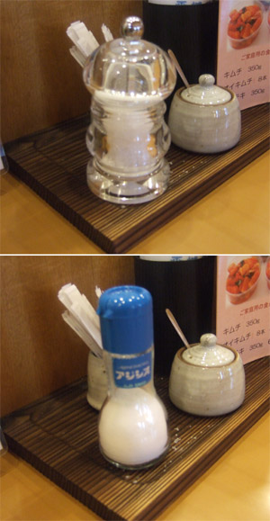
たわけが！
どう考えてもアジシオの方がうまいだろうが！
岩塩程度でこの私を倒せるとでも思ったか？
恥を知るが良い！ ほほを赤らめるが良い！
岩塩攻略に気をよくした私は、各種の肉を頼み、焼き始める。
むっ……この私の研ぎ澄まされた感性に、肉や野菜の心の声が聞こえてくる。
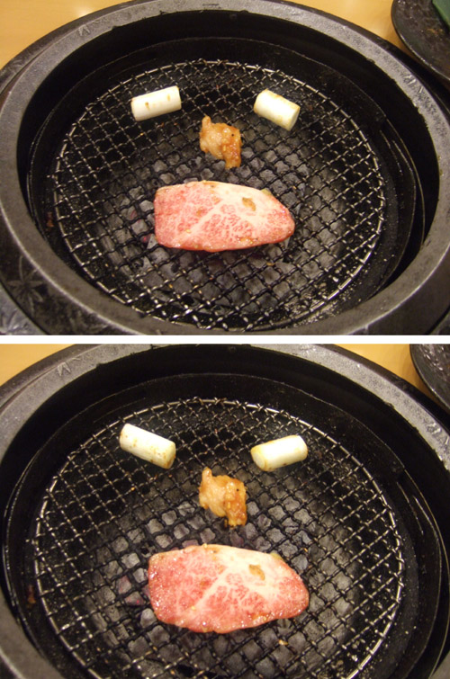
カルビ「どうせ切り刻まれて食われるなら美人がよかったなぁ……」
ネギ「まったくだ。よりによってこのような男に……」
カルビ「絶不調だよな、おれたち。なんかイライラしてきた」
だまれ食材ども！
許されない！
極上カルビに言われている分は許す。
だが！
ネギはゆるさん！
この私……が！ ネギ…ごと…き…に！！
お前など煙吸い込み口の中に落としてやるぜ。
ﾎﾟﾄｯ……フフ。
ネギをも攻略した私は得意になって焼肉を楽しむ。
さてそうこうしているうちにそろそろおなかいっぱいに。
ふとみると、茶碗にごはんつぶが残っている。
私は「ごはんをきれいに食べなさい」などという貧乏くさい教えがキライなのである。美学的理由によって、ごはんつぶを残すのだ。
とはいえ、このままだと、
「なぁにあの人？ なんだかんだ言って、ただキレイに食べるのが面倒なだけじゃない。お百姓さんが悲しむわね」
などと評される可能性がある。
「それにあの人ってなんか、変よね」
「そうよね。お百姓さんっていうか、あの人のご両親が悲しんでるんじゃないかしら」
「馬が魚でないのと同様、彼はもてないわ。」
「彼自身、すべての男性のうちでもっとも失敗した男性の一人にちがいないわ」
「まさにあなたの言うとおりよ」
おいうるさい！ 言い過ぎ！
ちょっと素でへこむだろうが！ あと、和訳口調やめろ！
許されない！！
そこで、単にキレイに食べるよりもずっと手のかかることを成し遂げることにした。
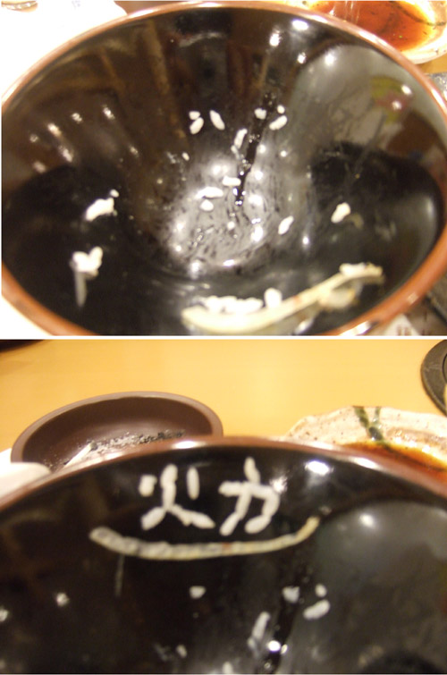
「火力」である。
焼肉における火力の大事さを、世の中に伝えてきたのである（ごはんつぶで）。
いやぁ、今日もいいことしたなぁ私。
踊り喜ぶがよい、百姓どもが。 ←誰やねん
なお、文字を書いている途中に突如店員さんがテーブルのところに来たときは死ぬほどびびった。
「失礼します」
とかいって食い終わった皿片付けてるの！
横目で私の作品を見てちょっと笑いそうになってるわけ！
し、し、失礼だぞ、君！！！
05/10/29
数学――Ｃ
本日夜、一人で吉野家でめしをたらふく食っていたところ、知り合い（女子大生）から電話が。
女「もしもし〜げんき〜」
お誘いですかね！！！！
テンション？ 上がってませんよ！ 普通普通！
凸「よう、どうした。こんな時間に」
女「凸……あのさ、ひとつききたいんだけど」
この女、私に気があるんですかね！！！！！
告白寸前なんすかね！？
なに！？
女性と電話するのがひさしぶりでテンションあがりすぎじゃないかだと！？
失礼なッ！ 何を根拠に私がそんな寂しい生活をしているなどとッ！！
遺憾の意表しちゃうよ？
凸「聞きたいこと？ うん、いいよ。言ってみ（今あえる？ だったら、忙しいからと渋りつつｏｋすることが大事。ごはん食べにいこうだったら、今まさにレストランでディナーを楽しんでいるから、軽く飲みにいく程度ならｏｋと答えるべきじゃろう。吉野家においてこういう色気づいた会話してると目立つぜ……周囲の羨望のまなざしが痛いぜ。フッ）」
女「数学で、Ｃって何」
しるか！
お誘いじゃないのかよ！ ノットお誘いかよ！
テンション下がってねぇよ！？ いやまじで。別に！
しかし数学でＣ？
「数学Ｃ」という高校数学の分類について聞いているのだろうか。
それともこの人、だまされて「1789年、フランスで定数Ｃが発見された」などと吹聴され信じてしまっているのか。
凸「はぁ？ Ｃって言ってもいろいろ……」
……だがまて！
実は最近数学の世界においてはＣというのは流行しており、私が知らないだけという可能性もある！
もしそうであれば、彼女のことをフフンと鼻で笑っては私が恥をかいてしまうではないか！
ここはこうだ！
凸「Ｃ……Ｃねぇ。うむ、アレは……よく出るからな」
女「教えてよ」
凸「（ヒントなしかよ！）いやぁ、よく出るよアレは（倒置法）」
女「どうすればいいの？」
凸「（どうもしねーよ！ お前がどうにかしろよ！！）し、式を言ってみなさい」
女「Ｃって書いてあって、左と右に数字があるの」
凸「はぁ？」
女「Ｃの左に5、右に3って小さい字で書いてある」
凸「（うっわー！ コンビネーションのＣかよ！！ この女、たかが5Ｃ3を計算させるためにこの私に電話かよ！）ああ、コンビネーションだね」
女「ふぅん」
凸「（いや反応うす！！）」
女「5Ｃ3はいくつなの」
凸「10。というのも、コンビ……」
女「ありがと〜 じゃぁねー」
ｶﾞﾁｬｯ。ﾌﾟｰｯﾌﾟｰｯ。
利用され捨てられたァァァァッ！
おい！ 何みてやがる！！！
05/10/17
おしごと
最近忙しい。今日はちょっとした事情で早くに帰れたが。
この先１週間ほどの主な予定。
水 9:00出社（中略）13:30〜23:30 打ち合わせ
木 9:00出社（中略）13:30〜23:30 打ち合わせ
金 9:00出社（中略）13:30〜23:30 打ち合わせ
土 資料作成
日 資料作成
月 9:00出社（中略）13:30〜23:30 打ち合わせ
火 9:00出社（中略）13:30〜23:30 打ち合わせ
アホか！
そんな打ち合わせしたら、真理にたどり着いてしまうだろうが！！
凸 「ということは、第４項５の規定から……あっ！！」
係長「あっ！！」
凸 「係長、これひょっとして……真理じゃないっすか？」
係長「これはすごい……打ち合わせすぎたため、ついに真理にたどり着いてしまった……」
凸 「ってことは……神は存在しますよ！」
係長「本当だ！ これはすぐに大臣に報告せねば！！」
凸 「大臣、大臣！」
警備「なんだ、君たちは！」
大臣「……？」
凸 「神はいます！ いました！ 三角座りしているんです！」
警備「こら、よせ！」
係長「それも、鈍角二等辺三角形です！！」
凸 「あぶり出しになっているだけなんです！」
警備「やめろ、大臣の前で幾度となくひざの曲げ伸ばしをするんじゃない！！」
係長「すぐに発表しないと！」
警備「やめないかッ！ なんだその甘い香りを放つ磁石はっ！」
凸 「ホチキス ホッチキス ホチキス！」
係長「仕事だりーっ！！ ギャハハハ」
報道「だ、大臣。あの２人は何ですか？」
大臣「……わが省とは関係ない。」
（とつげき東北及び同係係長、平成１７年１０月２５日付懲戒免職）
「これであなたも難民になれる！」
とかそういう本売ってねぇかなぁ……( ´ρ`)
05/10/14
鉄砲
織田信長は、鉄砲隊を３列に並べることで、騎馬で攻めてくる武田軍を破ったという。
最前列が１発目を打つと、即座に２列目が前に出て２発目を打ち、次に３列目……そしてその間に弾込めを終えた１列目が再び出る……というイメージである。
私も、武田軍を破る方法を考えてみた。
（１）鉄砲の連続射撃による方法
最前列が１発目を打ち、２列目が２発目を打ち、３列目が「わしらの力、とくとみよ！」と叫ぶ。そして１列目が再び前に出る……の繰り返し。
（２）ドラえもんによる方法
もしもボックスを出してもらい、「もし私が 織田のぶお だったら･･･」と言う
（３）受けを狙う方法
鉄砲のかわりに石包丁、てぬぐい、国勢調査の調査票などを持たせて３列になって攻める。
（４）ブスを殺す方法
ブスの通り道に、毒を塗ったまきびしをまいておく。
05/10/13
黒人はなぜ黒いの？
「それでまあ、一言で黒人といいましても、定常的に黒いわけではなく、ミクロに見れば、白い分子の流入よりずっと速い速度で黒い分子が体内に流入しているからなわけです。 」
05/10/12
紙資源についてまじめに考察する
大学の頃は、学校にあるコンピュータルームにお世話になった。
当時はまだ家からネットするには「テレホーダイ」でなければ金がかかったのである（麻雀にはまっていた私は、１ヶ月で４万などの電話代請求がきてびびっていた）。
好きなだけネットを回れ、無料、ていうか血税、というのがすばらしい。
特に良かったのは、大学のプリンターで好きなホームページなどを印刷できることである。
しかし、充分に気をつけねばならない。
私の友達は、何か操作を間違えて「印刷」をし続けた状態で家に帰ってしまったのだ。
週明けに、コンピュータルームが騒然としていた。
なんでも、１万枚以上も印刷していた人がいるというのである。助手が死ぬほど怒っていた。
そんなにたくさん紙が入っていたことにも驚かざるを得ない。
……ごめん、友達って言ったけど実はおれです、ハイ。
……しかも今でも職場でよくコピー間違えて100枚とか無駄コピーしてます、ハイ。
いいもん♪ 血税だから♪ テヘ☆
05/10/09
Ｓ？Ｍ？
筆者は、ドミノピザが大好きである。
最近は減ったが、最低でも２週間に１回は食べる。
ドミノピザの良いところは、
・ピザの種類によるが、おいしいやつはとてもおいしい
・自分でプレーンピザの状態から自由自在にトッピングできる
・Ｓサイズでハーフ＆ハーフができる
・ネット注文でき、しかも自分がトッピングとかして作っておいた
ピザを「お気に入り」に保存しておける（次回は１クリック）
というわけで今日もピザを食べようと思ったわけだ。
まずは新作ピザをひととおりチェックしようと、色々といじくっていた。
そのときである。
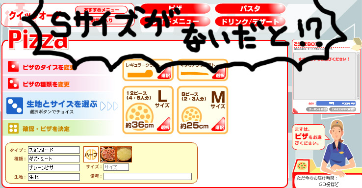
なんと、Ｓサイズが選べなくなっているのである！
Ｍサイズは１人で食えないし高い！！
Ｓサイズは！？ Ｓサイズはどこなのよッ！？
ページ中を探し回った。
どんな隅々までも読んだ。
しかしＳサイズが見当たらない。
そればかりではない、「申し訳ありませんがＳサイズはやめました」などとも書いていない！
『はたらくひとたち』
（前略）
なりたいな♪ なれるかな♪
なりたいけ〜ど〜たりないなぁ〜♪
やる気も知力も足りないな♪
でもいまなりたぁぁああぁ〜〜い♪
（東大でて医者か弁護士に）
まわれよ地球♪
Ｓサイズのピザが注文したいなああァァアアアギャアアア！！
ｯﾊｧﾊｧ･･･
おい！
医者か弁護士というアレを捨ててまでこれだけ譲歩してやってんだよ！
出せよぉ！ Ｓサイズのピザをよぉ！ わかってんだぜ？ あるんだろうがよぉ。その背中のふくらみはなんだ？ ピザＳだろ？ ピザＳなんじゃろう？（なんでそんなとこに隠してんねん）
と、気が狂い始めた瞬間、はたと気づいた。
まてよ。
以前、Ｓサイズのピザを注文し、お気に入りに入れていたではないか。
「お気に入り」から選ぶとどうなるのだろうか。
まさか以前のまま、「Ｓサイズ」が残っているのだろうか。
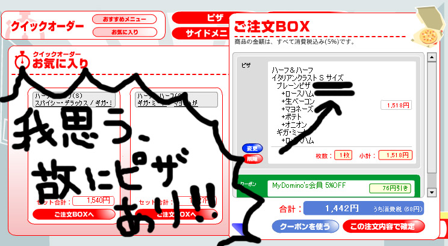
コギト・エルゴ・ピザァァァァ！！！！ ヒャッハー！
筆者の日常の行いが大変よかったため、神が救いたもうたのである。
死ぬほどテンションを上げて注文する。
すると、一番最後、あと１クリックで注文、という画面にきて……
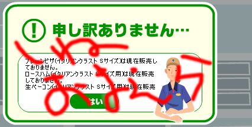
先言えや！！！！！！！！
もう一度言う。
筆者はドミノピザが嫌いである←
05/10/07 （05/10/06を先にお読みください）
ドラゴン公務員
オッス！ オラ公務員！
公務員が７人集まれば龍が現れて願いがかなうらしいぜ！
って、また！？
またそのネタなの！？
凸って実は日本大学卒じゃない！？
それにしても効率ということを考えれば、
（１）生年月日を入力
（２）生年月日から動物が決定される
（３）動物に応じた占い結果が出る
という一連の流れは、
（１）生年月日を入力
（２'）生年月日に応じた占い結果が出る
という風にできるわけだ。
同じように、
（１）ドラゴンボールを７つ集める
（２）龍が現れる
（３）龍に願い事を言うと、願い事がかなう
は、
（１）ドラゴンボールを７つ集める
（２'）願い事を言うと、願い事がかなう
に短縮可能だろう。
いわば、龍の民営化である。
そうするとここで、職を失った元国家公務員である龍が、再就職する方法を考えていかねばなるまい。
一つはドラクエに天下りする道がある。
いやしくもドラゴンボール事務次官の手前まで上りつめた龍である。天下り先のドラクエにおいては、キースドラゴン水準の地位は確保できるはずだ。
また、量産型の「うろこのたて」になる手もある。
いっそ、ニートになる手もある。部屋に閉じこもって毎日ネット。いやお前、「こんな生活やめたい・・・」っていう自分の願いをかなえろよ。おそいまだはやく。
まるで頭の悪い人のような日記だが、違う。
君もあと数年したらわかるだろう。
ニュースでやってたが、国家公務員の定員が、１０年間で２０％削減される方針らしい。
じゃあ、龍もあれだな。体長が12センチになっちゃうな。
（もともとちっちゃ！！）
05/10/06
公務員ボール
オッス！ オラ公務員！
みんな、元気してっか？
のうのうと暮らしつつドラゴンボールを集める毎日だぜ！
引いてるな！
オラの必殺技、みせてやる！
血・税・拳！
デター！ 強いコレ！
急所に入りさえすれば一撃よ。
お前らが「からかさ連判状」で何かを訴えてきても無駄だぜ！
なーんて強引にテンションあげてみたけどさぁ、実際公務員も大変なんですよね。
ま、愚痴はこのくらいにして、次回の公務員ボールもお楽しみに！
シマンテックあげ〜るよ〜♪
シマンテックあげ〜るよ〜♪
05/10/02
ＭＳＮでの会話
凸：ところでさっき おいかけ を変換すると
凸：バンヌァ と変換されたんだが
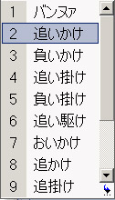
凸：これはなんだ←
凡：なんだその破廉恥っぽい言語は
凸：そう 自分の中で恥ずかしい変換を勝手に登録してしまっている可能性もあって
凸：君に告白するしかなかった
凸：君の辞書では変換されない？(笑)
凡：ないね
凡：グーグルで調べてもでない。
凸：存在さえしないのかよ・・・
凡：携帯の変換も見てみたいわ
凸：あれ残るのやっかいだよな！(笑)
凡：友達と暇なとき見せ合って笑ってる
凸：( ≧∇≦)ﾌﾞﾊﾊﾊ!
凸：素で引く変換がいっぱいでてくるぞ？(笑)
凸：あ と入れるだけで あれれ〜どうしたの？（＾＾） とか。
凸：いつ誰に使ったんだよ こんな顔したオッサンが・・・
凡：ぎゃはは
凸：か で、「かな、いま会社おわったよ」とか。
凸：もうはるか昔にふられてんだよ！ 死ねよこの携帯！
凡：よわ！！(笑)
凸：隠しておきたいことってあるよね・・・
凸：前もいったと思うがスト２ができなかった中学〜高校時代とか
凸：部屋で 両手の指をリュウやガイルにみたてて戦わせていたぜ・・・
凸：むろんソニックブームなどの声マネつき。燃えた・・・
凸：性的な自慰行為並に 誰にもみられたくない(笑)
凡：たまーに思いっきり「しょーーーりゅうぅぅぅけん！！！！」とかポーズ付きでやる
凸：君もか←
凸：手スト２ 少なくとも1000試合はやったぞ？ オリジナルキャラもいたしな(笑)
凡：オリジナルキャラ作成は俺もやった・・・
凸：こいつの大足つえー！ とか。頭悪かったんだな おれ・・・
凡：≧∇≦ブハハハハハ
凡：オリジナルキャラの必殺コマンド妄想くらいだな俺は
凸：それもキモイ(笑)
凡：竜巻＋波動入力でそれっぽい技が出る とか
凸：技名つけてたんだろ！！！ 隠すなよ！！
凡：なんとかソニックバスター とか かなり凡庸な名前だったな・・
凸：( ≧∇≦)ﾌﾞﾊﾊﾊ!
凸：センター500点台のやつに そういう人ようおったわ←
凸：手スト２ もうクセになってて 今でもふとぼーーっとしてるとき やっちゃうよ・・
05/09/22
将棋
アナ「先手 ８六 歩」
解説「歩をついてきましたね」
アナ「後手 ３二･･･こっこれは･･･！？」
解説「うわ、ゴリラですね。凸７段、盤面にいきなりゴリラを置きましたよ！」
アナ「後手 ３二 ゴリラ」
解説「うわぁ、盤上が恐ろしくめちゃくちゃですね！ さて先手の平６段、どう対応するでしょうか」
アナ「先手 ８五歩」
解説「無視して歩をついてきてます！！ すごい精神力です！」
アナ「後手 １二 ･･･これは･･･バファリンでしょうか？」
解説「確かにバファリンですね。後手、バファリンを打ちましたが･･･大して受けてませんね」
アナ「先手 ８四歩」
解説「おおっと、先手、心を乱さずに手薄な後手に攻め込みます！ 凸７段、どうするでしょう。見ものですね。」
アナ「･･･10秒」
アナ「･･･20秒」
解説「凸７段、熟考しますねぇ。」
凸「･･･待った！」
解説「『待った』いいました！ ７段のくせにいきなり待ったです！ おもむろにバファリンを引っ込めてます！ 恥ずかしくないのかこの男は！？ 照れ笑いしてます！ うざい！！」
凸「やっぱりこっちで」
アナ「後手 １二･･･なにしてるんですかこの人」
解説「書いてます！ １二の位置にペンで何か書き込みはじめましたよ！」
アナ「後手 １二 『ワープゾーン』」
解説「ワープゾーンですっ！！ きっと彼は次にここを使っていきなり敵陣に成りこんだりしますよ！ うざすぎる！」
アナ「先手 ８四歩」
凸「参りました」
アナ＆解説「詰んだァァァァ！？」
05/09/21
わが人生
成ってみたら、「と」じゃありませんでした。
05/09/19
三大欲求
私の高度な知識で言えば、「人間の３大欲求」を図で表すと、
性欲
睡眠欲
焼肉欲
【図１】３大欲求
こんな感じになる。
ちなみに、各々の位置関係にまったく意味ない。
さてこれの一つである焼肉欲を本日も満たしてきた。
ｎ人で焼肉にいってワイワイやるのは実に楽しい。
ドラ「何がｎ人だか。どうせ１人でいったんでしょ」
凸「ｎは正の整数」
ドラ「友達がいないから１人でいったんでしょ？」
凸「ｎは正の整数」
ドラ「ｎ＝１ね」
凸「決め付けるな！」
ドラ「１人で行ったかどうか、10000円賭ける？」
凸「１人で行った方に10000円（即答）」
ドラ「ほらね。かわいそうなやつ」
凸「卑怯な･･･！」
まあそういうわけでいつものごとく１人焼肉ですがね。
ちなみに他に１人でする活動は、カラオケ、ゲーセン（太鼓の達人）などなど。
おずおずと「太鼓の達人」の太鼓の前に１人で立ち、汗をかきつつバチを振るいまくる私のことを、人は「誇り高き勇者」と呼ぶ。
※なお、誇り高き勇者はもてない。
しかしアレですよ。
平城苑っていうなかなかおいしい焼肉屋（の本店）なんだけども、なんか店の方針が変化したらしく、塩が岩塩になってるんです。こう、塊になってて削って入れるみたいな。
普通のサラサラ粉状の塩と違って、塩のつぶが粗いので、食べたときにしょっぱい部分と薄い部分が激しくできてしまい、口にあわないんですよ！
無駄すぎる･･･無駄すぎるよお前たちの努力は！
１ＵＰキノコが穴に落ちそうになってムリに取ろうとして、結局取れずに自分が穴に落ちる、みたいな。
ドブスが張り切って合コンに行く、みたいな。
ひとしきり食いまくり、家に帰ってきたら某Ｓさん（美人）から、
「ねぇ、焼肉いかない？」
いきました。今いきました。だからいきません。いきたいけども。がんばって生きていきたい。
05/09/11
投票所までの距離
さて総選挙ですね。
私はわざわざ某省に行って選挙対応事務を手伝ってきたにもかかわらず（日記参照）、政治的ポリシーによって、今回も投票に行きませんでしたよ。
ネットで、選挙の投票所についてのアンケートを見つけました。
（投票所までの距離）お宅から投票所まで歩いて何分ぐらいかかりますか。
37.8％ 5分未満
21.3％ 20分未満
1.6％ わからない
31.4％ 10分未満
7.9％ 20分以上
ふむふむ。
あまりにも選挙に興味がない私がこのアンケートに答えていたなら、どうなっていたでしょう。
「わからない」が0.1％増える、なんてもんじゃありませんよ。
31.4％ 10分未満
7.9％ 20分以上
0.1％ トイレの電気が切れた。60ワットだろうか？
いいかげんな答え書いちゃってます。
質問されているのに、無関係な質問を返すというこの頭の悪さ。
しかも相手も、つい本気（マジ）になって再びアンケートをとって返してきたりします。
（ワット数）とつげき東北さん家のトイレの電球のワット数はいくらでしょうか。
17.8％ 40ワット未満
31.3％ 60ワット未満
0.6％ わからない
31.4％ 80ワット未満
18.9％ 80ワット以上
おい、無駄なアンケートとるな！
すげえばらついてるし、わかるわけないのに「わからない」と認めている人が0.6％しかおらんで！
みんないいかげんすぎるで！
05/09/08
無償の饒舌
こんばんは、とつげき・アスベスト・東北です。
いきなり不吉だって？
そうでもないんですよ。
今日、アスベストは「静かな時限爆弾」などと呼ばれ恐れられていますね。
何より恐るべきはそのネーミングセンスのなさだとなぜ誰もつっこまないんでしょうか。
「静かな時限爆弾」
バカじゃないでしょうか。
「静かな時限爆弾」
うはは どっひゃっひゃ。
誰だよこんな名前つけて喜んでるやつは(笑)
そもそも、アスベストは怖いですけれども、世の中には色々こわいものがあります。
職場や学校とかでもいますよね。
寒いギャグを連発する人や、また、ブスが。
毎日、いつ突っ込もうか、いつ突っ込もうかと悩んでいます。
ダメな例：
アホ「プロが作ってるんだよ、プログラムだけに」
凡庸な突っ込み「関係ないですやん（笑顔）」
正しい例：
アホ「プロが作ってるんだよ、プログラムだけに」
凸「お前石綿か！（裏拳をぶちこみながら）」
今は、これです。
石綿がせっかく取り上げられているので、こういう黒いつっこみをしなければいけません。
まあどうでもいいですが、今日は飲んで帰ってきて、気分が乗っていたので家の廊下で昇龍拳がでそうな気がし、４回ほど試してみました。
おそらく、２回は出ていた。
まあ１回はちょっと自分でも自信なかったですが、もう１回は絶対出ていました。無敵時間がありました。
今度誰かかわいい女性とデートする機会があったら、街の真ん中で出してみせます。あいかわらずモテモテ風です。
05/09/03
エクセル
選挙対応ってことで、某省に選挙関係の手伝いに行ってきた。
自民党など、色々な政党からの立候補者のリストが、バイトさんの手でエクセルに入力されていて、一覧になっている。
それの住所とか、立候補者の氏名などに間違いがないか確認したりする作業をやってきた。
どれどれ。
政党名称 政党代表者 政党本部住所 立候補者
自民党 小泉 純一郎 東京都〜永田町７−４−１ ○○○○
自民党 小泉 純一郎 東京都〜永田町７−４−２ ××××
自民党 小泉 純一郎 東京都〜永田町７−４−３ △△△△
自民党 小泉 純一郎 東京都〜永田町７−４−４ □□□□
自民党 小泉 純一郎 東京都〜永田町７−４−５ ●●●●
いやだから！
エクセルに最初書いたのをドラッグしてるせいで本部住所が連番になっちゃってるから！
きづけ！
最後、
東京都〜永田町７−４−３６
にまで達してもうとるがな！！！
こんな単純ミスがいっぱいあるのを、１日がかりでただただ修正してくる作業をしてきましたとさ。
スケールのでっかい仕事やってるなぁ、中央官庁！！
※ここに出した住所はあくまでも架空です。
あと普通に、
小泉 一郎
とかもあった。
誰やねんそのいかにも凡庸そうなオッサンは！！
05/08/30
うどん、ぎゅうどん、ゲーム
石川県に住んでいた頃、よく通っていた道路わきにあった店のカンバン。
「うどん 牛丼 ゲーム」
この哲学のなさ！
欲望のおもむくまま書くな！！
うどんとは？ 牛丼とは？
それを熟考せずしてこのようなカンバンを掲げてしまう理念のなさ！！
友達Ｗ「うわ、この店理念ねー」
凸「カスだな。教養を感じないよ、この店には」
Ｗ「……ゲームやりたくない？」
凸「……うむ、ゲームだけはやりたい」
Ｗ「負けたような気が……」
凸「言うな！ われわれはたまたまゲームがしたかっただけだ」
Ｗ「だな」
その後
Ｗ「ふう。ぎゅうどん食って帰るか」
凸「いいね！！！」
05/08/11
なんでもありジャンケン
中学の頃、私のまわり（といっても私と周囲の数名だが）で流行ったのが「なんでもありジャンケン」だった。
普通、ジャンケンはグー（石）、チョキ（ハサミ）、パー（紙）の３種類しか出せないことになっている。
ところが、ジャンケンにおけるこうした制限は単なる思い込みにすぎず、実はさまざまな手を出すことができるのである。
例えば「グー」の形から、人差し指だけを前に突き出してみよう。
すると……まさにこの形はドリルに他ならない。
ドリルは紙はおろか石をも突き破り、ハサミも簡単に壊してしまう。したがって「ドリル」はグーチョキパーのどれにでも勝てる。
両手を使うとさらに表現力が増す。
左手をグーの形にして固定し、その上に右手でドリルを作って置く。明らかにこれは砲台である。
砲台はドリルにも勝てるなどという説明をする必要はあるまい。
このように、両手で表現可能なものならば何でも出してよく、出した手について解説しあい、協議の結果勝ち負けを決めるのが「なんでもありジャンケン」であった。
かなり強い手としては「原爆」「太陽」「ブラックホール」などがある。ブラックホールは両手でふにゃふにゃと動きを再現する必要もあった。
このゲーム、バカとやるとブラックホールばっかり出して全く面白くないのだが、相手によっては非常に面白い。
凸＆Ａ「ジャンケンポン！」
凸「……そのくねくねした動き、何」
Ａ「ヘビ」
凸「よわ。おれの戦闘機な。」
Ａ「ちっ」
凸＆Ａ「ジャンケンポン！」
Ａ「……お前のその全身を使った動きは？」
凸「ラジオ体操」
Ａ「おれのやつ、ゆったりめのポロシャツな」
凸「再現できてなさすぎやでおい！(笑) しかも勝てへんやろそれ(笑)」
Ａ「あいこだな。」
凸＆Ａ「ジャンケンポン！」
凸「……なにそのチョキみたいなやつ」
Ａ「チョキ」
凸「うわシンプル！！」
Ａ「その両手の羽ばたきは何よ」
凸「アゲハチョウね」
Ａ「チョキにすら負けとるやんけ(笑)」
その他「キャッチャーフライ」「パン」「大阪市」「ブス」「ブラックホール壊し機」など色々な手があった（ブスはけっこう強い）。
最後のほうになると「強さ」などといった抽象的なものまで出始めた。
言葉で解説するとアレだが、全身の動きや表情を使って再現するのでなかなか笑える。
※なお、28歳になって、街中でこれをやっていると、おまわりさんにつかまるから要注意だ！
05/07/19
スモーはツヨインダヨッ！
もし私がスポーツのインタビュアーだったら人間の深層心理をついたインタビューができるのだろうか。
凸「すもうの魅力は？」
おすもうさん（以下、す）「全力の戦い、という部分ですね」
凸「なぜ、ふとっちょの大人たちが裸でこかしあうんです？」
す「え……」
凸「なぜ、ふとっちょの大人たちが裸でこかしあうんです？」
す「（くっ……２回言われた）いや……そういうルールですから……」
凸「ちょっと恥ずかしくないですか？」
す「いやべつに……」
凸「仮にこかしあうことこそが大切だとしても、裸な上、あんな不自然な器具を腰の周りに装着することに、違和感を覚えませんか？」
す「……」
次の日、このすもうとりは、若干の恥じらいを見せるうわ目使いで、衆人に対してあらわになった乳を、それとなく手で隠しつつ土俵に上がることになろう。